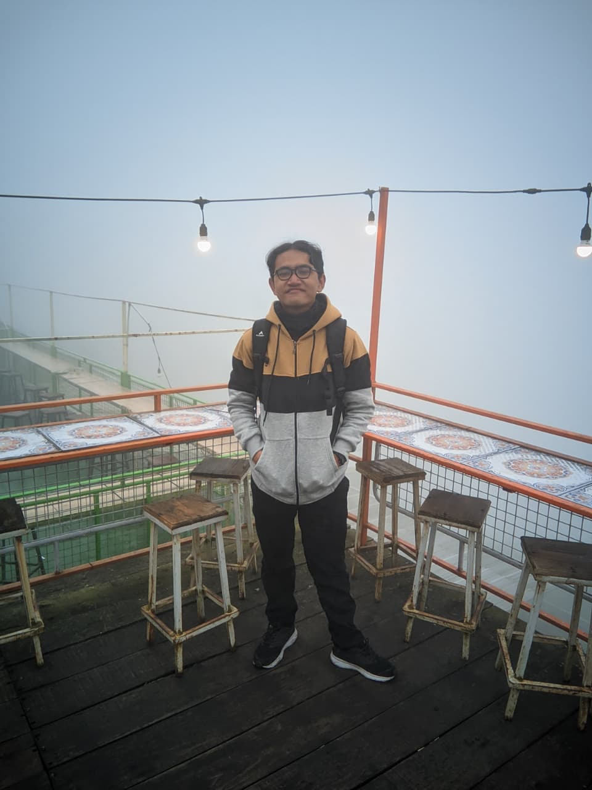
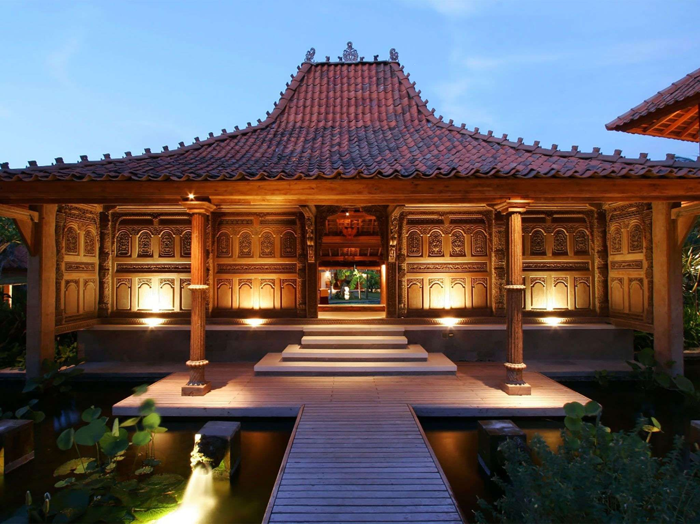

| DATA DIRI | ||
|---|---|---|
| Nama | Taufiq |  |
| Alamat | Surakarta, Banjarsari, Nusukan, Minapadi RT02/RW09 | |
| Sekolah | SMKN 9 Surakarta | |
| Jurusan | TJKT (Teknik Jaringan Komputer dan Telekomunikasi) | |
| Hobi | Coding dan Bermain Game | |
| DATA BUNGA | ||
|---|---|---|
| Nama Bunga | Tulip | |
| Asal | Asia Tengah, populer di Turki & Belanda | |
| Nama Ilmiah | Tulipa | |
| Ciri Khas | Bunga berbentuk cangkir, warna beragam, batang tegak, mekar di musim semi | |
| DATA RUMAH ADAT | ||
|---|---|---|
| Nama | Rumah Adat Joglo |  |
| Asal | Jawa Tengah & Jawa Timur | |
| Ciri Khas | Atap berbentuk trapesium bertingkat (menyerupai gunung), tiang utama disebut soko guru, melambangkan status sosial tinggi, biasanya dimiliki bangsawan atau orang terpandang. | |